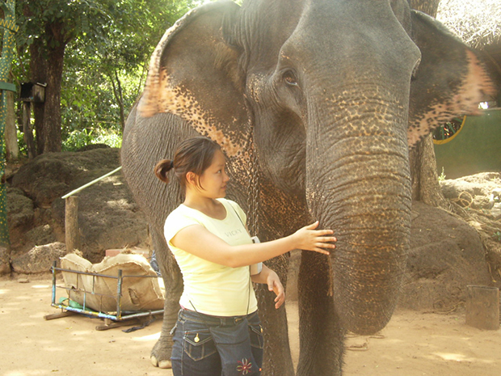
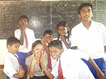
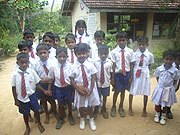
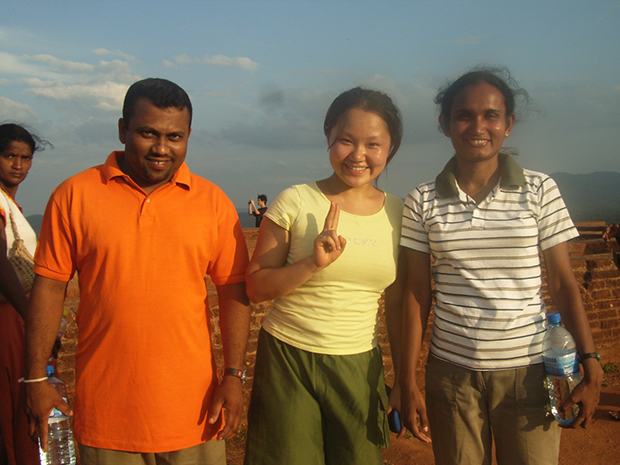
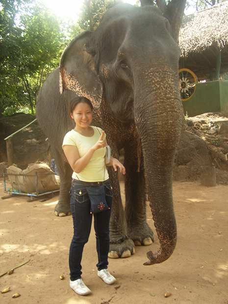
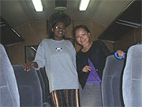

 ゾウにタッチ！ |
 日本語教師ボランティア |
「欧米と比べて安いのでこのプログラムの参加を決めました。 英語留学をしたくても、欧米だと50万ぐらいかかってしまいます。 この安さは絶対的な強みだと思います。
英語のレッスンは先生により異なりました。
ある先生はテキストを使ってレッスンしてくれました。
新しい表現の説明、文章を読んだあと内容理解をしているか質問するなど、大変体系的でした。
またこの先生は私に話す場をたくさん与えてくれました。
『あなたはどう考えるのか』『この文章を要約して』など。
私はこの先生のレッスンが大好きでした。
完全なるフリートークの先生もいましたが、個人的感想から言うとそれは少々つらかったです。
だんだん会話のネタがなくなってくるので‥。
テキストを使うなど体系的なレッスンをしたほうがいいなぁと思いました。
宿題についてですが、自分自身について書く宿題が多かったです。
自分を表現する場は日本の英語教育ではなかなかなされないので、いい宿題だと思います。
最後になりましたが、どの先生も個性豊かでした。スリランカのことを詳しく教えてくれて、大変興味深いものでした。
旅行しているだけだと、ダンス・美術など目に見える文化しか知ることができませんが、こうして先生と話す機会をいただけて、教育制度・結婚・恋愛など深い部分を知り、そうした中でスリランカに暮らせたのは本当に貴重な経験でした。
スリランカでのホームステイは大変楽しかったです！
ホームステイを通して、スリランカでの人との関わりの強さを知ることができました。
近所の人、親戚の人が好きなときに家へ遊びに来て、家事を手伝っている。話している。
すごいなって思いました。
ホストファミリーのマーネル氏もお母さんもすごく気を遣ってくれたので快適でした。
何も不自由しませんでした！
 村の学校の子供たち♪ |
ボランティア活動は、日本語教師をしました。 スリランカはフリーエデュケーション制とのことですが、村と町の子では、どんなに学校が近くても、別々の学校に通っていました。
|
村の学校は競争の雰囲気も出ていませんでした。
どんなに貧乏な子も結果さえ残せば大学まで行くことができ、医者にも先生にもなれますが、このような場で結果を残すのは町の子以上に難しいんじゃないか、と思い悲しくなりました。
あまりにも子供たちがかわいかったので‥。
平等に見えるようで、平等じゃないんじゃないかって感じました。
子供たちはどんなことにも興味を示し、スリランカの子供と接していると、日本の子供たちは表情がすごく乏しいな感じました。
本当にこの学校が大好きでした。
低開発村視察は大変興味深いものでした。
私は畑や果物を作っている村へお邪魔したのですが、どの家庭も暮らしが豊かになって喜んでいるようでした。
シンハラ語だったので訓練校指導者と村の人たちの会話を理解することはできませんでしたが、今の畑の様子や問題などを必死に説明しているようにみえました。
ここに村の人と指導者との信頼関係を見ることができた気がします。
全ての人が少しでも豊かになるように手をとりあっている光景が大変ステキだと思いました。
スリランカは大変すばらしい国だと今思っています。 実際いってみると、自然が近く、人々が大変温かい国でした。 |
 低開発村視察 |
たしかに村などでは、家族のさまざまな問題を抱えていると思います。
しかし私の見たスリランカは子供が親からちゃんと愛されてました。
だから子供は私を見て照れ笑いをしながら手を振ってくるのだと思います。
私は子供の姿は国を見る点で大変重要だと思っているので、感動しました！
スリランカへまた行きたいと思います！
次は旅行したいので、利用させていただきたいと思っておりませんが、友人にお勧めしたいプログラムだと思っています！
スリランカでは本当にたくさんの貴重な体験をさせていただきました。
今では私にとっても 大切な国のひとつです。
どうもありがとうございました！」
 ゾウのお世話ボランティア |
 電車で旅行☆ |